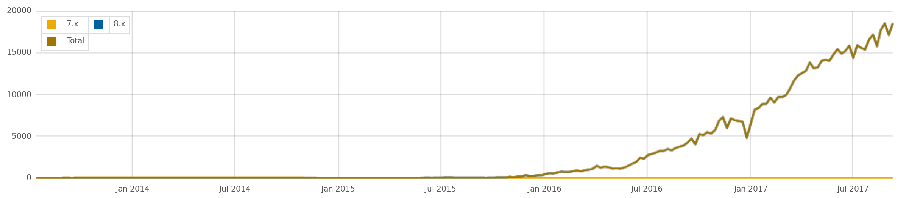

Media is in core!
What is in it for me?
Janez Urevc | @slashrsm | janezurevc.name
Janez Urevc (@slashrsm)
- senior engineer and team lead at MD Systems
- Active member of Drupal community since 2009
- Lead of the D8 media initiative
- top contributors
- our CTO (@berdir) is one of top 5 D8 contributors
- top Drupal contributors
- Leading major Drupal initiatives
- D8 expert
- D8 media expert - lots of media clients
- 20% of every project to the community
- Full projects, audits, bootstrap weeks, consulting, architecture, ...
A bit of history...
- Beginning of D8 cycle: a lot of ideas
- NYC Camp 2015: roadmap defined
- Entity browser, Media entity, Entity embed, ... are born
- Very lonely initiative
- NYC Camp, Examiner.com, MD Systems - media ecosystems would not exist without them
Adoption starts...
Adoption starts...
Adoption starts...
- Case studies
- Tutorials
- Webinars
- ...
We knew we're on the right track!
* but still felt kinda lonely....
There are always some challenges...
- Complex ecosystem, challenging to configure
- No visual guideance
- Core uses completely different solution
- Contrib is hidden from evaluators to some extent
Why include Media in core?
- Standardization
- Discoverability
- Visual guideance
- Scrunity, better quality
- Sustainable maintenance
MVP for media in core
- Current functionality (files, images, embedding) +
- Support for remote media (YouTube)
- Media library
- Reusability
- Media entity needed in the very foundations!
Timeline
- Spring 2016 - interest expressed around New Orleans
- First meetings happen, no real results
- Roadmap proposed on DC Dublin
- We spend 4 months documenting it and getting sign-off
- First "Media in core" in December 2016
- Media entity committed on May 19th
Timeline
- Widgets, formatters
- Migration support
- ...
We still have at least a year of hard work in front of us to reach MVP.
Let's stop for a moment...
...and talk about...
Funding
Funding
- This is huge!
- without the initial investment from Examiner.com and MD Systems there would be no media in D8
- 20k sites are using media ecosystem today, multi-million €€ projects
- And yet...
- ...we still rely on volunteers
"We are waiting until it is ready."
But what is in it for me?
- Media entity is now in core
- API changed a bit, plugins need to be ported
- Not enabled by default
- You can still using contrib Media entity
You have a site that uses Media entitiy
- Start testing migration to core version
- Check if there are any plugin ports missing, help
- Move to core version when you feel comfortable
You have a site that uses files/File entity
- You can use this approach until the end of D8 life cycle
- If you feel there are benefits moving to Media entity
- Start working on migration, collaborate
Planning a new site
- Use core Media entity if possible
- Otherwise use media entity from contrib
We need help!
Weekly meetings, #drupal-media on IRC, 14:00 UTC every Wednesday
Join us on sprints this week!